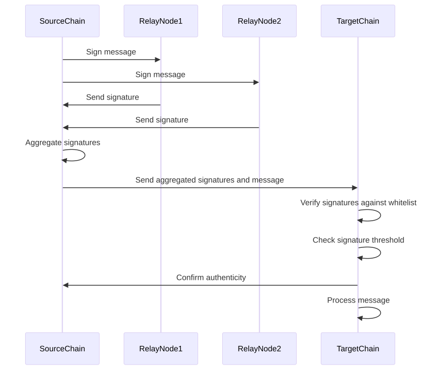

This approach uses multiple signatures to verify and authenticate messages. Here’s how it works:
Think of it like a secure bank transaction that requires approval from multiple managers before it can be processed. Each manager signs off on the transaction, and only if all signatures are valid does the transaction go through.
Here below is the content as is from the spec just added sections for better readability
Multisig relay is a mechanism that leverages multi-signature consensus for relaying messages across blockchains. In this approach, the message originating from a source chain is cryptographically signed by multiple independent relay nodes.
Message Signing: These relay nodes or validators have public key signatures that are registered and verified against a whitelist of trusted nodes maintained on the target chain's smart contract.
Signature Aggregation: The relay nodes' signatures on the message are aggregated and attached to the communication payload sent from the source chain to the smart contract on the target chain.
Verification: The target chain's smart contract first verifies that the aggregate signature comprises valid signatures from a threshold number of trusted relayers according to the whitelist. This blockchain-based consensus check establishes multiple attestations of the message's authenticity and integrity. If the multi-signature passes the policy set on the target chain, the message is deemed to have originated genuinely from the source system and can be processed and trusted accordingly by the target chain.
By decentralizing the act of relaying through multiple participating validators and embedding multi-signature thresholds on target chains, multisig message relay aims to provide stronger security, availability, and integrity assurances for crosschain messaging.
Think of it like a secure bank transaction that requires approval from multiple managers before it can be processed. Each manager signs off on the transaction, and only if all signatures are valid does the transaction go through.

Flow: